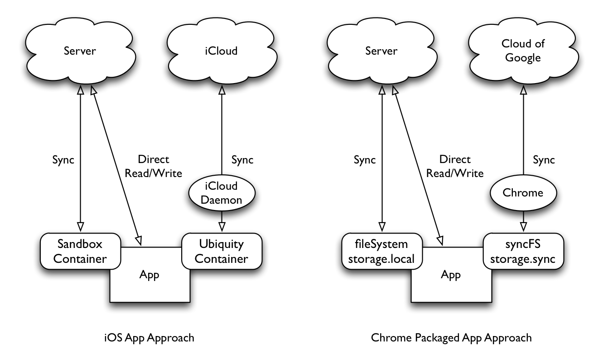

上周有用户向我反应，他们已经在 Chrome Web Store 中发现了测试中的 Hotot 3。然后我才发现，Google 已经开始在 Web Store 中上线 new Packaged App了。只不过只在 Chrome Dev Channel for Windows 和 Chrome OS 中是可见的。
在新版的 Web Store 中，所有的之前的被称为网站快捷方式 Chrome App 都被移到了 「Website」 这一标签下（1.0 版的 Hotot 也被移到这里），而 「App」 标签下仅包含 new packaged app。
这个现象表达了 Google 的态度，我想也就是他们的战略，即 Chrome 是未来。长期在 Chrome 的生态中开发，我之前已经多次对 Chrome 表达了赞美之情，人们最初认为 Chrome OS 是一个没了网络就啥都不能干的系统的看法是完全错误的。我想说的是 Chrome OS 实际上是一个增强版的 iOS，在诸多方面，Chrome/Chrome OS 都与名声赫然的 iOS 有很高的相似之处，本质上，new Package App 就是 Chrome/Chrome OS 上的 Native App。当然，作为一个「增强版 iOS」，Chrome OS 拥有一些在 iOS 上被翘首企盼但是还没有的特性。
考虑到 Chrome OS 和 Chrome 浏览器的一致性，下文如未特殊说明，统一用 Chrome 指代 Chrome 浏览器和 Chrome OS，用 App 指代 iOS 中的 App 和 Chrome 的 new Packaged App
一致的 App 范式
在 iOS 中，每个 App 都运行与独立的沙盒中，App 的数据不得直接进行交互，也没有全局的文件系统访问能力。在 Chrome 中也有类似的机制。下图分别描述了在 iOS 上的 App 和 Chrome 上的 App 与网络服务交互的方式。

可以看出，Chrome 中 fileSystem 和 storage.local 相当于 iOS 中 App 的沙盒文件系统；syncFileSystem 和 storage.sync 则负责同步到 Google Cloud （也就是 Google Drive），与 iCloud 类似。
在这个模式上，Chrome 值得一提，即只要在 Chrome 中登录过账户，那么所有使用 syncFileSystem 和 storage.sync API 的 App 数据都会无缝地同步到 Google Drive，而无需额外授权。
两者有类似的通知机制
在 iOS 中，由于 App 没有后台运行的能力，因此需要 App Notification Push 来接收更新。而在 Chrome 中也有类似的能力，那就是 Google Cloud Messaging。GCM 不但提供 Android 设备的通知，也提供 Chrome 设备的通知。
一个折衷的后台进程
准确地说，Chrome 中没有 Daemon。取而代之的是 event page。这是一个基于事件的 App 控制方式。官方希望通过 API 引导开发者去保存 App 的状态，而不是一个持续运作的后台进程。
更好的进程间通讯机制
iOS 的进程间通讯机制一直被开发者诟病，需要将 URI 硬编码到 App 中才能实现那么一丁点交互能力，更别提各个 App 分开授权对体验的破坏了。
在 Chrome 中则有一套消息机制，这套消息机制可以作用于 App 内部，也可以作用于整个 Chrome，用于多个 App 之间的通讯。
最后
作为新一代 OS，Chrome OS 没有 OS X 和 Windows 在设计上所背负的历史包袱，因此可以有机会像 iOS 一样轻装前行。我很高兴看到 Chrome 走在正确的道路上。